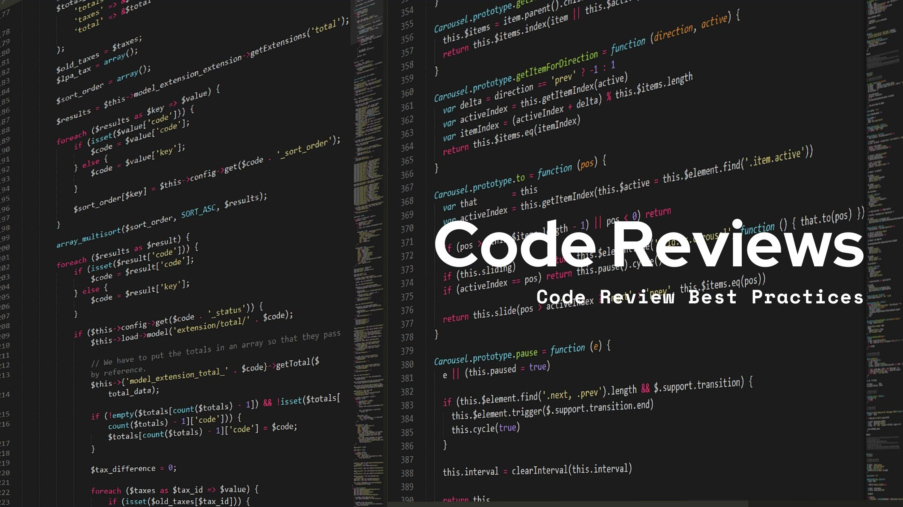

Enhancement Plan and Code Review
The capstone project for my bachelor's degree in computer science is designed to showcase the skills learned throughout the degree and how I can effectively use those skills. The narrative that follows is based on an Event Tracking Application that I created during CS-360: Mobile Architecture and Design. The Event Tracking Application will be used as all three of my artifacts and will be used for all three enhancements. This narrative and enhancement plan will focus of the categories of software engineering and design, algorithms and data structures, and databases in the artifact that I am presenting. I have analyzed the original code for weaknesses, limitations, and vulnerabilities using the skills, best coding practices, and resources I have been given throughout my degree. I will then provide my enhancement plan for each of the three categories and provide examples of how the course outcomes apply to the current code and the changes I will present.
Software Design and Engineering
The first category that will be examined within the code base will focus on Software Design and Engineering. The code base has several activities that are used within an Android application. The MAIN ACTIVITY handles the user logging in, validates users’ credentials against the information stored within the database, and allows the user to navigate to the list of events or the registration screen. The REGISTRATION ACTIVITY is what manages the registration of the user and makes sure that the username and password for the user is provided prior to them being stored in the database. The EVENTLISTACTIVITY displays the list of events to the user. This activity uses a ListView for display and allows the user to delete events. The EVENTADAPTER connects the event data to the user interface in a RecyclerView and provides the functionality for the editing and deleting of the events. The SMSPERMISSIONACTIVITY is currently only a placeholder for the management of SMS permissions.
The Activities included in this section provide features and functions to the application. This section of the code is for user authentication (login and registration), CRUD operations for events (create, read, update, delete), Dynamic user interface updates via RecyclerView and ListView, and provides a placeholder for SMS functionality.
The code within these activities is created with modularity and provide different classes for the different functionalities (authentication and event management) but as stated before, the SMSPERMISSIONACTIVITY has not been implemented. Code is easy to read, and the classes and methods are clearly and logically named, however the code does not have detailed comments to advance the code creation and further explain the code. There is minimal error handling used with the operations of the database or for user input, (no check for database connection failure). The security of the application is also at risk. The passwords are not stored with hashing or encryption and there is no input sanitization which allows the change for SQL injection attacks. There are also no unit tests in this code section with can be crucial for the reliability of the application. The code overall follows JAVA coding standards but does have some naming inconsistencies. Making these changes along with using design patterns (MVC) could help better this code.
Enhancements:
- Redesign the UI/UX: Implement a consistent color scheme and typography for better aesthetics, enhancing the user experience in the MAIN ACTIVITY and EVENTLISTACTIVITY.
- Add a Bottom Navigation Bar: Ensure seamless navigation between different sections of the app, improving usability across all activities.
- Incorporate Animated Buttons: Provide interactive feedback to users during their interactions, particularly in the REGISTRATION ACTIVITY and EVENTLISTACTIVITY.
- Improve Security: Implement password hashing and encryption, and ensure input sanitization to mitigate SQL injection risks, addressing vulnerabilities in user authentication.
- Increase Error Handling: Add checks for database connection failures and improve user input validation, enhancing the reliability of the database operations.
- Implement Unit Tests: Ensure reliability through thorough testing of functionalities, particularly for user authentication and event management.
Specific Skills Demonstrated:
- UI/UX design principles
- Application development best practices
- User-centered design techniques
- Error handling and security practices
Course Outcomes Supported:
- Outcome 1: Employ strategies for building collaborative environments.
- Outcome 2: Design, develop, and deliver professional-quality communications.
- Outcome 3: Design and evaluate computing solutions using algorithmic principles.
Algorithms and Data Structures
The second category that will be addressed within the Event Tracking application will be Algorithms and Data Structures. The code base used for this application utilizes the standard data structures that are provided by the Android network, these include ListView and RecyclerView. These structures are used to display events to the user. This code also used SimpleCursorAdapter to bind the data from a SQLite database to the aforementioned ListView.
The SimpleCursorAdapter functions as a binder of the database cursor data to the user interface components. The EventManager used in this code, uses lists to manage events which provides the application with efficient data retrieval and manipulation.
The code reviewed for the Algorithms and Data Structures section of this review has some quality parts but there are also sections that need improvement. The efficient of the code is lacking. The current set up of the code is only efficient when the data set used is small. The performance of the application may degrade as the number of events grows, this is caused using ListView and SimpleCursorAdpater and not RecyclerView. The complexity of the application code is also something that lacks optimization. The code itself is rather straightforward but if a more efficient algorithm or data structure was used for adding and deleting events the application would be more efficient. The scalability of the application is also in question. The current way the application handles data is something that needs changing. If pagination or lazy loading for event retrieval was used the scalability of the application could be greatly increased.
The application could be greatly improved by providing greater logic, data structures, and optimization. Some of the algorithms have a higher time complexity in data retrieval and are not necessary. This not only will help with complexity, but it will also provide algorithm optimization. The data structures within the application can also be more advanced (hash maps, trees)
Enhancements:
- Implement Multilingual Support: Add English and Spanish language resources and allow users to toggle between languages, enhancing user accessibility.
- Optimize Data Structures: Replace ListView with RecyclerView for better performance and scalability in the EVENTLISTACTIVITY.
- Introduce Pagination or Lazy Loading: Enhance data retrieval efficiency as the number of events grows, addressing scalability concerns in event management.
- Refine Algorithms: Use more efficient algorithms for adding and deleting events to improve overall performance in the EventManager.
Specific Skills Demonstrated:
- Data handling and localization techniques
- Implementation of algorithms for language management
- Optimization of data structures for efficient data retrieval
Course Outcomes Supported:
- Outcome 1: Employ strategies for building collaborative environments.
- Outcome 3: Design and evaluate computing solutions using algorithmic principles.
- Outcome 4: Demonstrate innovative techniques in computing practices.
Databases
The third and final category that will be reviewed for the Event Tracking application with be Databases. The database for an application is essential for holding all the information the user needs stored and the information that needs to be available to the user. The Event Tracking application uses SQLite for its data storage, management of the user’s credentials, and storage of the event information provided by the user. The database provided within the application handles the CRUD operations and schema management.
The functions and features of the database are not extremely robust and are in their early stages. The storage of the data (user and event) is stored within SQLite and allows for persistent storage across the application sessions. The database class also uses CRUD operations which creates methods that allow for the addition, retrieval, updating, and deletion of events and users of the application.
The code and database which is being reviewed for the Database category needs improvement but has a good start that currently provides the application with data storage and retrieval. The database itself needs to be normalized so that it can avoid any redundancy within the system. There is also currently no error handling within database operations. The lack of error handling can cause the application to crash and for the operations within to fail. The security of the database, especially user data, needs to be enhanced within the database. There are also performance questions for the database. The use of prepared statements to prevent SQL injections instead of the user of cursors for data retrieval will help this application.
As shown in the first category, SMSPERMISSIONACTIVITY has not been implemented and needs to be finished to improve the structure and logic of the code. The use of a better architecture, Model-View-ViewModel will also improve separation and testing. Error handling needs to be implemented within the database as well. The use of try-catch blocks and providing user feedback will allow for better usability and review for the user and creator. The database needs to handle hash and salt passwords prior to storing them in the database instead of the lack of encryption that there is currently. The database also needs unit tests and integration tests to test functionality and components within the system. The creation of a README file for architecture and set up instructions would also be beneficial along with adding more comments to the files.
Enhancements:
- Implement AES-256 Encryption: Secure sensitive user data stored in the database, addressing security vulnerabilities in user data management.
- Add Authentication Methods: Protect user information and ensure secure access, enhancing the user credential management process.
- Utilize HTTPS for Data Transmission: Encrypt data sent between the application and the server, improving overall data security.
- Normalize Database Schema: Avoid redundancy and improve data integrity, enhancing the effectiveness of CRUD operations.
- Enhance Error Handling: Implement try-catch blocks for database operations and provide user feedback, improving the reliability of database interactions.
- Introduce Unit and Integration Tests: Ensure functionality and reliability of the database operations, supporting robust testing practices.
Specific Skills Demonstrated:
- Secure data handling techniques
- Implementation of encryption methods
- Best practices for database security and error handling
Course Outcomes Supported:
- Outcome 3: Design and evaluate computing solutions using algorithmic principles.
- Outcome 4: Demonstrate innovative techniques in computing practices.
- Outcome 5: Develop a security mindset to anticipate and mitigate vulnerabilities.
The entire application needs further functionality and security to allow for a more robust and usable system. The code itself could benefit from more complex structures and design patterns that will allow the code to be better maintained. The algorithms within the application can be optimized by including more advanced data structures and improving the efficiency of the entire application. The database and security of the application must also be improved and by normalizing the database schemas, optimizing queries, and implementing best practices when it comes to security, the overall maintainability, efficiency, and security of the application will be improved.
For my video on code review click, Event Tracking App Code Review